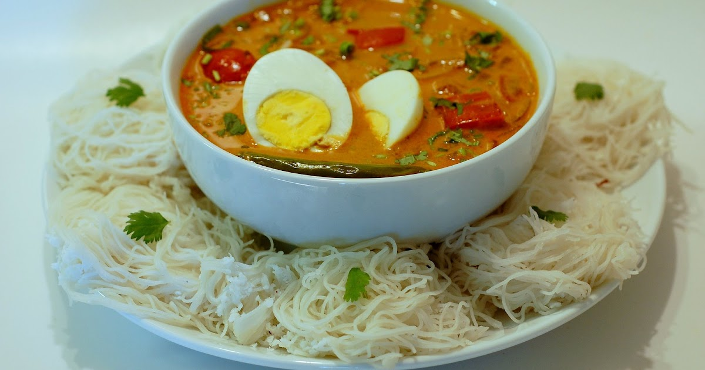
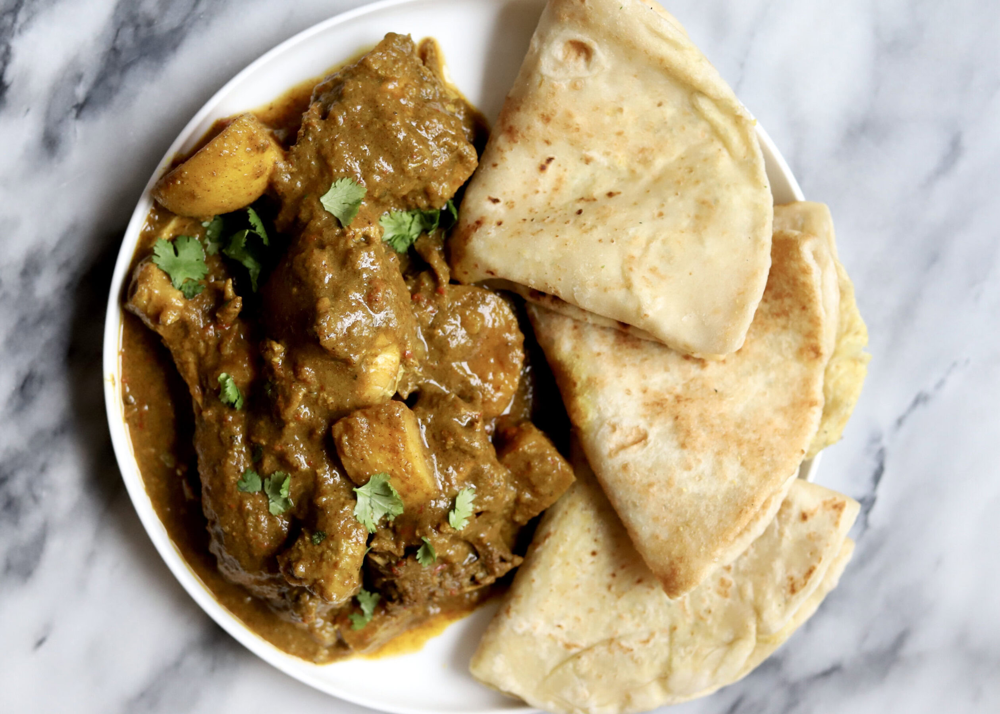

rice and curry
most fav menu

chicken kottu
most fav menu
kothu roti, is a Sri Lankan dish consisting of chopped roti, a meat curry dish of choice (such as beef, mutton, seafood, chicken) along with scrambled egg, onions, and chillies.

idi appa and curry
most fav menu
Idiyappam (or string hoppers) is a delicate, steamed rice noodle dish popular in South India and Sri Lanka. Because of its light, airy texture and mild flavor, it acts as the perfect sponge for rich, flavorful curries, stews, and sweetened coconut milk
